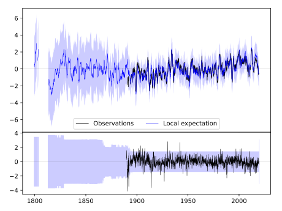
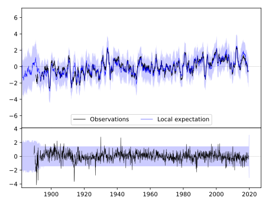
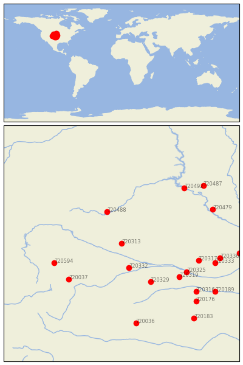

ALLIANCE 1WNW [USA]


| Neighbour | Name | Country | Distance | Lon/Lat | Years |
|---|
| 720313 | ALLIANCE 1WNW | USA | 0 | -102.9, 42.1 | 1889-2019 |
| 720332 | LODGEPOLE | USA | 113 | -102.6, 41.1 | 1893-2019 |
| 720488 | HOT SPRINGS | USA | 152 | -103.5, 43.4 | 1893-2019 |
| 720329 | IMPERIAL | USA | 204 | -101.7, 40.5 | 1890-2019 |
| 720037 | FT COLLINS | USA | 248 | -105.1, 40.6 | 1873-2019 |
| 720594 | LARAMIE RGNL AP | USA | 248 | -105.7, 41.3 | 1866-2019 |
| 720319 | CURTIS 3NNE | USA | 253 | -100.5, 40.7 | 1893-2019 |
| 720325 | GOTHENBURG | USA | 261 | -100.2, 40.9 | 1893-2019 |
| 720317 | BROKEN BOW 2 W | USA | 276 | -99.7, 41.4 | 1893-2019 |
| 720492 | PIERRE RGNL AP | USA | 331 | -100.3, 44.4 | 1866-2019 |
| 720333 | LOUP CITY | USA | 335 | -99.0, 41.3 | 1893-2019 |
| 720316 | BEAVER CITY | USA | 341 | -99.8, 40.1 | 1890-2019 |
| 720336 | NORTH LOUP | USA | 346 | -98.8, 41.5 | 1888-2019 |
| 720479 | ACADEMY 2NE | USA | 346 | -99.1, 43.5 | 1893-2019 |
| 720036 | CHEYENNE WELLS | USA | 370 | -102.3, 38.8 | 1889-2019 |
| 720176 | NORTON 9SSE | USA | 372 | -99.8, 39.7 | 1893-2019 |
| 720487 | HIGHMORE 1 W | USA | 383 | -99.5, 44.5 | 1887-2019 |
| 720189 | FRANKLIN | USA | 395 | -99.0, 40.1 | 1890-2019 |
| 720312 | ALBION | USA | 407 | -98.0, 41.7 | 1892-2019 |
| 720183 | WAKEENEY | USA | 427 | -99.9, 39.0 | 1883-2019 |